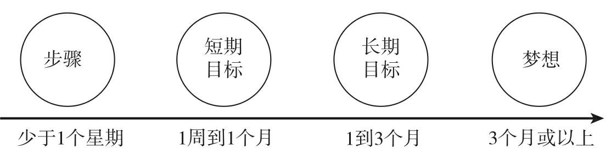
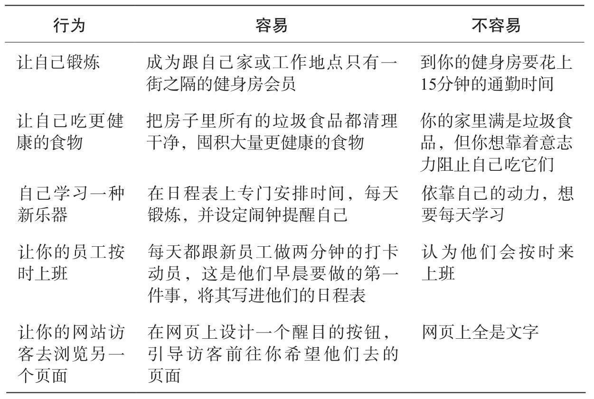
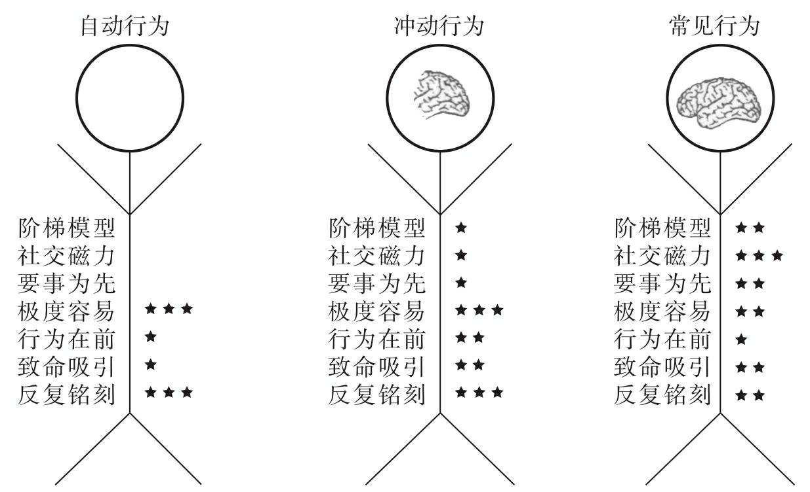

带来持久改变的 7 种武器
Get the knowledge flowing and circulating! :)
目 录
从理解行为到做出改变坚持到底背后的科学原理7种武器、3种行为、2步模型SCIENCE：7种心理武器 ※ 阶梯模型：整合步骤、目标与梦想社交磁力：让他人成为推动自己改变的力量要事为先：找到对自己最重要的那件事极度容易：越简单，越能坚持到底为什么无法让想做的事情更容易怎样克服这些问题行为在前：行为改变了，意识也会随之改变如何制造行为在前（4种方法）背后的科学原理致命吸引：极度诱惑能让你无法克制地坚持下去什么样的奖赏才是极度诱惑提升吸引力的5个妙招具体的方法快修妙修反复铭刻：把行为变成习惯，将习惯设为默认坏消息 & 好消息
人们虽然知道自己需要怎样做才能达到目标，但他们通常却不会那样做，因为他们没有系统学习过如何改变行为并坚持这种新行为。
坚持了某些传统，同时也意味着藏匿在这些传统中的旧有习惯一并坚持下来，从而导致无法改变。
例如，构思富有创造力、鼓舞人心的产品，或者是不再拖延。
一如中国文化早已领悟到的那样，正在把一件事坚持到底的方法，就是将它默认为习惯，或将它变成社会惯例的一部分，让它容易做到。
有许多图书是记者或商人执笔写的，他们很擅长讲故事，但作者对是什么促使人们发生改变的，并没有直接的科学经验。
要想真正改变行为，人必须得理解自己为什么要做这件事，彻底弄明白人类行为背后的科学解释。
要做出持久改变，你不需要对自己是个什么样的人做出改变，只需要了解持久改变背后的科学，并设计一套适合自己的行动步骤就行了。
我特意用了“武器”一词，是因为想强调持续推动人们做出不同选择的力量。这些力量不仅能决定人们会做些什么、产生什么样的感受，它们还会让人产生情绪上、化学上和神经上的变换。
一组力量会推动你坐进沙发，倒一杯酒，打开电视机；
而另一组力量却会推动你穿上跑鞋，去做些锻炼。
你会采取哪一种行动呢？就是受到这些力量推得更狠的那一种。你可以让这些力量为自己效劳，毫无疑问，这些力量达到了“武器级”。
※ “SCIENCE”中的字母分别代表阶梯（Stepladders）、社群（Community）、重要性（Important）、容易度（Easy）、神经记忆（Neurohacks）、吸引力（Captivating）、铭刻（Engrained）。
研究表明，把焦点放在小步骤上，一个人便会有更高的成功概率。然而，就算人们知道这一点，也无法把改变坚持下去。这是因为，他们不明白这些步骤要有多小，又没有模型可供参考。我会在“阶梯模型”一章做出解释，小的意思是：小而又小。
举例：锚定效应。一个人对一件事的评估，会受到提示信息的影响。
要学会区分步骤、目标、梦想之间的关系。
目标还分为：短期目标、长期目标。
具体的评判标准：
梦想（超过3个月）
长期目标（1~3个月）
短期目标（1周~1个月）
目标比梦想更容易量化。
很多时候人们以为自己规划的是步骤，但其实规划的是目标/梦想。
步骤（少于1周）

如果一个人完全专注于自己的长期梦想，那么让他写10步完成一件事的清单，它的每1步都会非常庞大，没有可操作性、无法下手，最终让自己越来越气馁。
Tips
一开始，你说不定会觉得设定一个个“阶梯”太难了。毕竟，阶梯模型依赖于你能否准确地估计实现某件事需要多长时间。但人们不见得总是精于预测。这就是为什么我会建议你找3个值得信任的人来帮忙的原因。你要先自己设定目标，再征求他们的意见，看看你设定的目标是不是真正的目标。如果他们说你要花3个月以上的时间才能完成它，那么它说不定就是你的梦想。把梦想刻在脑海里以保持动力，接着选择一个大约要用1个星期到1个月的时间来实现的真正的目标，然后去规划实现该目标的小步骤。
科学原理：
人们为快而小的奖励赋予的价值，高于延迟到来的大奖励。换句话说，人们青睐于迅速看到结果。
每当大脑获得奖励，一种强效的化学物质多巴胺就会喷涌而出，让人感觉良好，于是想要重复该行为以便再次感受相同的化学物质。
大脑是从相对而非绝对价值的角度来理解奖励的。
比如，期望得到1块钱，却最后得到了10块钱。和期望得到100块钱，却最后得到了10块钱。
前者的10块钱会产生开心，后者同样是得到了10块钱却会不开心。
即，一个人感觉良好并不是取决于其实际成就，而取决于他们期望达到的成就。
换句话说，如果我们能够调整自己的期望，就一直能够感觉良好啦（调整方法：从大梦想转向小目标、小步骤）。
每一小步都给自己奖励一下子。
阶梯模型的另一个重要组成部分是回想。
回想指的是回头想一下自己是如何成功地完成这件事的，并小小地庆祝一下。（只要小小庆祝，不用大张旗鼓）
这种回想的过程，有助于建立起心理学家所说的自我效能感（self-efficacy）。
自我效能感在这里指的是“改变是可实现的”这一信念。帮助人们回想过去的进展，意识到自己既然能够完成上一步以及上一步的上一步，那么他们也理应能够完成下一步。仅是告诉人们怎样改变，不足以提高他们的自我效能感。要用问题、奖励或对话让他们意识到自己已经取得的成绩，这一点极其重要。
有个做法值得一提，只有在认为自己完成了当下步骤的时候，人们才应该回想上一步。要不然，回想的作用恐怕就适得其反了。比方说，有个想要减肥的人正在改变饮食方式。如果他站上体重秤，发现自己的体重不减反增，那么立刻让他回想，恐怕就会起到相反的效果，更容易让他放弃饮食计划。
我们总喜欢把自己想成独一无二、不从众的。“社交磁力”一章会让你从全新的角度认识社群的力量，知道怎样驾驭它来帮自己和他人实现持久改变。
怎样让自己遇到一群志趣相投、渴望出力共同做一些事情的人呢？——社群。
社群：一群具有共同特征的人。
他们兴许有着相同的信仰、文化背景，也兴许有着同样的经济地位以及类似的兴趣爱好。
有些社群的人用安卓系统的手机而不用苹果手机，喜欢狗多过猫，听音乐用潘多拉（Pandora）而不是声田（Spotify）。
社群也可以建立在不由你选择的事物上，比如你出生的地方，甚至你父母是把你送到公立学校还是私立学校。
社群创造了社会纽带，它至少由两个人组成。一个大家庭，一个党派，一个国家，这些都是社群。
社群的几个特点【人在社群里怎样才能实现改变？】：（每一个成功的社群，都具备6个解决了人们心理需求的要素）
信任需求
社群里的人如果彼此信任，就更容易实现持久改变。
创造信任的方式：交流想法、经验和难关；聊聊今天做了些什么，分享个人信息等来。
融入需求
大多数人都有融入某些社群的需求。具有明确社交规范的社群在实现持久改变方面更成功。大多数人都愿意改变自己的态度和行为，以适应社群和这些群体规范。
融入的方式：理解社群的社交规范。
自我价值的需求
人在做能让自己感觉良好的事情上更容易坚持。能更好地满足人的自我价值需求的社群可以提升社群成员的自尊心和积极性。
社交磁力的需求
磁力：能够吸引人持续参与，就像磁铁吸附金属般。团队成员也可能有感到无聊、失去动力或疲惫的时候，但由于来自团队的磁力，他们无法停下来正在做的事情。这就是社交磁力，以及它创造持久改变的方式。
例如：就像你曾经注册微信的时候，你本来不想用，但是你身边的人都用，你必须用。
建立社交磁力的一种途径：通过分享视频or群发信息的方式召集具体的一个人或一群人，是建立社交磁力的一种途径。
获得奖励的需求
人们如果因为某个良好的行为获得了奖励，就会继续这么干。最终这些行为会变成习惯。
赋权需求
如果一个人能够感觉到自己能够控制生活，便会觉得自己被赋予了权利（我们称“赋权”为“自我效能感”）。若一些人从属于一个对其赋权的社群，并得到了榜样或导师的引领，那么，跟那些从不归属于此类社群的人比起来，他们更有可能实现持久改变。
想要持久改变？
选项❶：创建新社群；
选项❷：加入既有的社群。
建立社群
如何建立可以解决上述需求的社群呢？
答案：拥有同伴榜样。
案例：HOPE社群。
社群里必须有15%左右的人是同伴榜样。例如，如果你希望创建一个100人左右的社群，你应该找15个同伴榜样。
榜样的标准是，跟将要加入社群的其他人有着相同的人口统计特征和心理特征。
同伴榜样会将自己的故事分享给那些不愿说出自己想法的社群成员，给对方“点赞”，或以别的方式跟其他同伴榜样进行互动。这就是我们创造社交磁力的办法。
一开始会用一些奖励机制，等到有些新加入的社群逐渐转变为“同伴榜样”后，就开始渐渐取消奖励机制，让社群自动运行起来。
诀窍是找到传播正确信息的最佳榜样。这事一定要赶在邀请新成员加入之前做完。
4类榜样：
专家；
名人；
传播者；
本土榜样。
在“希望”社群研究里，我们邀请同伴榜样参与短期培训。
对于到来的新访客，你只应该为她们设定一个初始目标：加入后的第一个星期内为社群做些贡献。（有助于让社交磁力变得更强。）
结果：我们发现，使用这种方法12个星期后，你将拥有一个土生土长、继续发展、可持续多年的社群。
建立完社群，还要用正确的方法去运营。
加入社群
或许，你只想改变自己的行为，因为创建自己的社群要付出的劳动太多了。值得高兴的是，许多有助于你进行持久改变的社群早就存在了。
切记：假设说你想激励自己每天练习瑜伽，请记住，能让自己感同身受的社群对人们的影响力最大，所以要选择一家会员制度跟你的理念类似的瑜伽馆。你还要跟这些会员交朋友，下课之后多和他们见面。你越是积极地参与，其社交磁力就越强，你也就越有可能实现持久的改变。
一定要积极参与！
如果你希望人们坚持锻炼的习惯，或者继续购买你的产品，那么前提是，这一行为必须对他们十分重要。我相信大家都知道这一点。与“阶梯模型”一章对“小”的概念有了重新定义一样，“要事为先”一章将教你怎样重新定义“重要性”。
走进书店的励志和心理自助类图书区域，你大概会注意到，许多人都尝试着教导你怎样保持更强的动力。这些书潜在的设想似乎一目了然，如果人们有了动力去做某件事，就可能真的会去做。而如果人没有动力，应该就不会去做。所以心理自助类图书和励志大师们都想要教你培养一种能燃起斗志的个性。
但要是你没有这样的个性，那又该怎么办呢？告诉你个好消息：要把事情贯彻到底，人不需要天生就动力十足。
所以，除了社群，还有什么因素能让人们坚持做事呢？如果人们认为这件事很重要，他们就能坚持了。
你认为更重要的东西，对你选择做什么有着很大的影响。
我的感受 01 这段话给我的感受如下：
一个人会去做某件事，只有他觉得他想去做的时候，才会做起来。
否则都不太可能坚持下去！
然而，动力并不是非得靠天生的所谓“动机型人格”。
我的感受 02 如果你是一个自由职业者，那你如果想要利用好自己的时间，首先应该做到：
你自己的时间能够安排成：
起码每天9:00-11:30, 13:30~17:00，你在你自己的工作空间里。
如果你喜欢图书馆，那你这个时间段在工作空间里。
我的感受 03 再进一步：一个人会不会做某件事，实际上取决于自己内心中做这件事的理由够不够充分。
拿减肥举例。
如果减肥只是为了好看一点。你可能不会行动；
如果减肥只是为了买衣服方便些。你也可能不会行动；
如果减肥可以改变你的人生。或许你会心动但依然不够行动，因为很模糊：什么是改变人生？
如果减肥可以为你带来一份高薪体面的工作。或许你会心动，也会开始想要行动；
如果你不减肥你就要挂掉~ 那你估计已经在行动了！
人生头3件最重要的事：金钱、社会关系、健康。
有了钱，人们才能购买自己需要和想要的东西，并为此感到自己很强大和成功。
现金带来了足够重要的变化，让人们从根本上改变了行为。现金给了人们食品券无法带来的动力。
什么东西对自己重要，人的看法各有不同。太多因素导致了这些差异：人是怎么被抚养长大的，他们出生在哪个国家，他们的年龄有多大，等等。但要是你对此展开研究，有两件事就会清晰可见。首先，金钱不如人们想象中的那样重要。其次，社会关系比人意识到的更重要。
20世纪30年代，哈佛大学的研究人员发起了一项研究，他们追踪一群哈佛大学生的人生选择。这项追踪研究持续了整整75年。他们发现：牢固的社会关系对实现幸福来说是最重要的因素。
社会关系能让人开心。有时候，它比金钱更能让人坚持做事。
身体健康对人们也很重要，可以用来激励人们进行持久的改变。如果你生病了，奄奄一息，晋升成集团副总裁毫无意义。但如果你觉得自己可以通过某些行动来改善健康，你就会去做这些事情。
如何让事情变得更重要
生活可以引导人们对生活里什么东西至为重要重做评估。
例如：某个母亲在其儿子因为处方药滥用的情况下离世后，看到其儿子的日记中的想法和感受，决定致力于改善处方药滥用这个现象。
未来自我干预
人若是受到未来自我的提醒，比如想象将来拿到了奖金，就有更大的概率在工作中保持专注。
举例：未来自我干预法能让人改变饮食习惯、日常锻炼习惯和工作习惯，因为它能让一些人们原本觉得不重要的事情变得重要起来。看到将来瘦削的自己，能让想减肥的人放下饼干，选择更健康的食物，也可以让人钻出汽车去跑步。
行动：未来自我干预法表明，哪怕奖励看起来遥远，人也可以改变自己的行为。那么你该怎么做呢？去想一想将来的自己吧。
总的原则：你需要弄清楚怎样才能让事情变得足够重要，重要到你愿意为了它而改变。
举例：减肥的时候，逐渐累积了各种理由。穿衣服好看，容易买衣服，看上去没那么油腻更精神，夏天露胳膊露腿更有魅力，某个体检考核因为体重差点没有通过等等。
原则：问题可能出在你没有看到做这件事的重要性上，但这并不意味着你无法看到它的重要性，只不过你需要一个更重要的理由来有所改变。
人们往往以为自己明白容易的具体程度。“极度容易”一章将介绍怎样让事情变得真正容易，从而让你更可能坚持下去。
科学原理与心理学：
人们总是希望事情很容易做。他们喜欢容易做的事情，也会坚持做那些极度容易的事情。
面对障碍，人很快就会放弃做某件事。反过来说，如果你学会了怎样消除障碍，就能很容易继续做下去。
怎样让事情变得容易（都涉及消除障碍、让事情变得简单）：
控制环境
最有效的戒烟方法是扔掉家中所有的烟草制品，以及选定具体的戒烟日子（阶梯模型）。
改变环境，让它变得易于做某事，就会让人们真的去做这件事。
例子：电击实验。
原因：电击比抵抗更容易。
容易度让人坚持做事的力量是何其强烈呀。研究人员发现，设计一个让参与者难以拒绝的环境，几乎可以引导他们做任何事情。容易度是人类心理的核心方面。
限制选择
例子：伴侣的选择、果酱的选择。
原因之一是现在人们的选择太多了。“选择障碍”并不仅限于寻找伴侣方面，它还可以解释为什么人们在生活里会觉得做各种事情都很困难，不管是跑步、早睡，还是打电话去问候长辈。
现象：虽然人们总以为自己希望拥有更多的选择，但实际上，选择太多会让一个人难以做事。
例子：研究人员对这一效应做了更多的研究。举个例子，如果顾客只有两三种而不是一大堆退休储蓄方案可选，他们选择参与的概率会更大。
使用路线图
例子：破伤风小册子阅读完去接种疫苗的人数。
结论：这一效应还可推而广之应用到更多的事情上：拥有行动计划，让人更容易也更有可能去做一件事。
选择全新职业道路的人如果定好了该做什么、怎样去做的计划，更有可能坚持下去；
尝试全新健身方案的人如果有一套怎样做、什么时候去做的计划，更有可能坚持下去。
想要员工按时完成任务的管理者，如果拥有清晰的策略，知道该让员工怎么做到，那他也更有可能获得成功。
容易做，便意味着更有可能去做。
自己的例子：大型考试前的晚上，第二天的衣服、鞋子、早餐我都会提前准备好。（原来原理在这里。）
别人的例子：那些牛人每天都只穿一套相似的衣服。
错误的认知：熟悉歌曲的人在拍打节奏的时候以为对方一定能听得出来；销售员以为顾客了解产品的性能而没有详细介绍导致顾客不买；经历很多晋升的经理以为员工会理解自己想要做什么。
这些错误的认识，都源自人们掌握了太多的知识，这叫他们很难把事情变得让他人轻松上手。
进一步地↓
不过，人们不只会把事情弄得对别人太复杂，也会把事情弄得对自己太复杂，反而让他们难以将自己的计划贯彻到底。
例子：人们会报名参加离家很远的健身房，因为他们喜欢那家健身房，以为自己能够坚持去，但坚持去不容易，所以他们最终放弃了。软件开发人员制定了完成工作的时间表，但往往低估了实际需要的时间，这会引发团队的争议，有时甚至会让整个项目垮台。
原因分析：出现这种情况的原因，往往不在于当事人掌握了太多专业知识，而在于他们误以为自己十分了解自己。
“短线炒家效应”
人们对自己、对其他人将来会怎样行事，也会做出过分自信的预测。
例如，在预测自己对朋友的熟悉度方面，大多数人都认为自己预测得很好，但其实准确度并不比碰运气强。
例如，企业家对自己的技能过于自信。
例如，人们对自己的情绪预测得也很不准。
“短线炒家”背后的心理学知识可以说明，为什么人们很难坚持做事。人们为自己或他人制订计划，比如希望改变职业，学习一门新的语言，但因为他们高估了自己表现的能力，低估了遵循计划、坚持到底的难度，所以往往会半途而废，放弃原本打算要做的事情。
方法：我们可以效仿这种做法，用“亿创理财测试”来判断某事是否容易做。比方说，工程师或产品开发人员不要假设用户跟自己拥有同等水平的知识，会本能地知道怎么使用一款软件，而是把自己放到水平较低的人的立场上，比如为小孩设计软件，这对提高软件的易用度会很有帮助。
例子：参照图片中的一些让事情变得更容易的做法。

方法汇总：
❶ 控制环境
❷ 限制选择（限制选择范围）
❸ 使用路线图
❹ 站在用户/对方/事情实施的角度（不要高估自己的预测能力，不要低估遵循计划、坚持到底的难度）
“我们需要把事情弄得复杂些，这样才显得更聪明”的想法从写作扩展到了生活里的许多事情上，比如设计复杂的健身习惯，或者制订复杂的业务计划。可惜这是错的。
“极度容易”背后的心理学知识告诉我们，要对自己进行再教育。
如果最聪明的人（比如托勒密、奥卡姆、牛顿，还有当代的一些科学家）都认为简单更好，我们恐怕应该听听前人的意见，不要故意再给自己找麻烦。
你是否听说过“有志者事竟成”的说法？或者是否听说过“想法到位了，行动就会跟上”？“思想决定行为”是许多畅销励志书和流行心理学图书的理论基础。这些书会宣扬：人们可以通过自我改变的想象和意愿，来改变自己的行为。可惜这根本是错的。大多数吸烟者光靠想象戒烟是戒不了烟的。只是告诉自己“今年跟往年不同”，人们是无法坚持自己的新年愿望的；只是告诉销售员去想象自己做成了一单生意，管理者是无法让销售员真正把生意做成的。
社会心理学家现在知道，真实情况应该是反过来的。人们需要改变自己的行为，思想才会随之改变。你要“哄着”大脑，让它意识到改变可行。在“行为在前”一章，我会教你一些形成神经记忆的方法，即一套重新“设定”大脑，实现积极、持久变化的心理捷径。
前人智慧教导我们，行为的改变始于意识。
拿起一本励志或商业心理自助类图书，它会告诉你，如果你想要克服自己的恐惧、做个更优秀的销售员，或者过得更幸福，你需要改变自己的思考方式。传统的心理治疗师或许会在教那些想要感觉更好的人时说，要用类似“我很好，我很聪明，该死，大家都这么喜欢我”这样的警句，放弃原来的消极自我对话。
但是经过多年的心理治疗，阅读了许多心理自助类图书后，人们仍然很难控制自己的意识。他们发现，人要耗上几年时间，甚至一辈子才能学会通过改变想法来改变行为。那是因为，在这方面的前人智慧根本是错的。好在如今有一种更快也更简单的方法来破解大脑的秘密，帮助你坚持做自己想做的事情，它得到了科学的支持——我称之为神经记忆，亦可称之为行为在前。
你要不要做某件事，取决于你认不认同你自己的身份。
思维模式：做了某件事 → 导致你觉得你是某种人 → 导致你继续做某件事。（为了与“自我认同”保持一致）
经典生活案例：你说了一句话，假设说完了，你也意识到错误了，你仍然会维持那种错误（尽管你自己知道是错了）观点继续辩驳。
经典实际案例：你跟你女朋友吵架。
如果我们只是用自我暗示：我不是那种人，我不是那种人。当我们再次遇到相同的情境的时候，已经形成的思维捷径会迅速把你拉回到上次那个失败的经历而不是你自己回忆的“自我暗示”。导致你最终失败。
而神经记忆（行为在前）不靠自我暗示，而是从行为入手，用它重置思维，好让我们不再认为自己是失败者。
一个是自我暗示，一个是重置思维，当然后者更强啦。
这就是行为在前背后的逻辑。神经记忆是一套心理技巧，也是方便而快速地重置思维的方式。
我们可以运用行为在前这种方法来做自己想做的事，也可以用它让别人做一些对他们自己有益的事情。
例子：止痛药把你长久的头痛治疗好，进而让你重置了思维，给了你全新方式去思考这个世界和你自己。（疼痛的时候我们的情绪比较消极；不痛的时候，我们会更积极。）
因为止痛药也是一种神经记忆。当你在疼痛中挣扎的时候，你或许以为痛感要持续几天或者几个星期才会消失，但一颗小药丸让你看到了一种新的思考方式。它重置了你的思维，让你想起了几天前不疼时的感觉。它给了你一种全新的方式去思考这个世界和你自己。你很快就改变了想法，不再认为自己是一个患有慢性疼痛病、要不断地吃止痛药的老家伙，转而意识到自己还是几天前没有疼痛的那个人，你不需要依赖于长期服用止痛药。这种转变的发生，不是因为你尝试重新控制自己的想法，说服自己不再感到疼痛，也不是因为药物的成分在发挥作用，因为药的效力早就过去。它之所以能发生，完全是因为小药丸是一种神经记忆的手段。
顿悟瞬间：突然间看待世界的方式彻底不同了。
研究目标：怎样人为地创造出这样的瞬间？
神经记忆可以让人们回顾自己过去的行为，看到自己的改变，从而坚持做之前没法做到的事情。
神经记忆通过两种心理流程来让一个人坚持做事（认同）：
第一，人们相信，如果没有非做不可的压力，自己仍然在做某件事，一定是因为这件事很重要。人们会坚持这种行为，以求与对自己重要的事情保持一致；
第二，人们通过回顾过去做的事情来形成身份认同。也就是说，人们会继续做某件事，是因为这是他们自我形象的一部分。
行为：
富兰克林向对手借书并表达了感谢。让对手思维转变、重启大脑。它让对手的思维有了大幅转变，它重启了此人的大脑，让他意识到：富兰克林不是自己的敌手，因为敌手之间不会互相借书，慷慨行事。
富兰克林承认，他学到了重要的一课，那就是要向对手运用神经记忆技巧，而不是对抗与还击：“跟你向对方表达善意比起来，一旦他开始向你表达善意，就会愈发乐意再次表达善意，而且，这表明，谨慎地消除恶意，比憎恨、一报还一报、打有害的官司，益处要大得多。”
找不到约会的对象
先找异性聊天，体会到不那么焦虑的感觉，然后改变自己的社交能力。
身体动作：
看宣传片的时候左右摇头vs上下点头；
科学家们了解到，只要能让人按表示同意的方式去活动身体，就能让他们更多地认同。
这跟研究人员的发现完全吻合。较之使用左手写下答案的学生，用右手书写自己所具备的正面素质的学生自尊评分都更高。原因在于，当人们回顾自己的工作时，如果字迹潦草、显得不够自信，就会让他们对自己缺乏信心。与摇头研究相似，研究人员发现，人们的信心和自尊会受一些看似无关之事（比如用哪只手完成任务）的影响。
不必控制自己的想法，只要对自己的行为做一些小小的改变，你的意识就会跟着改变。
运用简单的手段，比如选择用哪只手来写便签，哪只脚踢球，跟着音乐跳哪种类型的舞蹈，就能决定人的自尊。从更广泛的意义上来说，我们了解到，身体动作可以用来改变人们看待自己的方式。
生理和情绪：
看图片，听心跳声音；
有大量研究表明，人们会凭借自己的生理和情绪征兆，了解自己是什么人、在想些什么、怎样采取行动。例如，人们会回顾自己的情绪表达，了解自己在一场活动中是高兴还是伤心。这么做背后的理念是，情绪表达，比如微笑或皱眉，可以让人感觉到情绪，哪怕他们并未意识到自己流露出了这些表情。
如你现在所知，这些方法非常简单而有效。我们无须努力控制自己意识里冒出来的想法，只需要应用微不足道的生理或情绪层面的神经记忆法，就能带来意识和行为上的重大变化。
这不足为奇，科学家们已经开始研究怎样将它付诸实践了。研究显示，生理和情绪层面的神经记忆法可以帮助改善患者的情绪，甚至减弱种族主义。
言语和认知（言语神经记忆 & 认知神经记忆）：
言语神经记忆
它强调了心理学家们如今的共识：人们使用的语言会影响他们的自我感觉，影响他们将来要做的事情。
投票的时候，措辞改变：“去投票对你来说有多重要”或者“身为选民，去投票对你来说有多重要”。
看到前一个问题的人，要思考的是做某事对自己来说有多重要；看到后一个问题的人，要思考的是成为某类人（会投票的人）对自己来说有多重要。研究人员认为，让人们重视选民的身份，而不是只强调他们关心投票，能够让人们采取不同的行动。他们发现，这种方法的确发挥了作用：那些认可作为选民对自己很重要的人，投票率更高。
认知神经记忆
认知神经记忆是最后一种类型，它让人们回顾自己的想法，了解自身行为。如果他们可以改变想法，也就可以改变行为。
例子：走神
换句话说，人们在回顾自己的走神情况时会认为，在从事喜欢的活动时，自己是能够保持专注的。
如果人们从事某一活动时能够全神贯注而不是频繁走神，他们就会更喜欢该活动。
但认知神经记忆又是最难执行的。这是因为控制自己的思维很难。(15)运用其他类型的神经记忆则要容易得多，你只需让自己的行为、身体动作或面部表情做出细微的改变，不用完全控制你的想法。
你该怎样把一件事情变得有吸引力，让自己不停地做下去呢？一种流行的方法是将其“游戏化”。具体就是，通过奖励人们积分、徽章和金钱，让某种活动或产品变得有吸引力，进而使人们愿意继续做或继续使用下去。但游戏化思维也并不随时都能奏效，关键在于利用心理科学。我在“致命吸引”一章中将介绍怎样才能让行为变得有吸引力，足以说服自己和他人继续做或使用下去。
有趣 ＜ 容易上瘾 ＜ 很有吸引力
道理很简单。如果人们做某件事感觉到了奖励，就会继续做下去。我把这称为坚持一种行为的吸引力。
有趣、奖励 ※ 把无聊的事变得有趣、具有奖励的性质，有助于你坚持目标，不管你的目标是什么。
科学原理
具体而言，行为主义者的操作性条件反射理论认为，学习是通过给予或剥夺奖惩来实现的。
著名行为学家斯金纳（B. F. Skinner）认为，所有的行动都依赖于以前的行动，也就是说，没有自由意志这回事。
日常生活中，我们只是习惯了以某种方式行事。如果做某件事的结果不好，我们就不会再做；如果结果好，我们就会重复这种行动或行为。
习惯科学不适用于人的原因：人相较于关在笼子的动物更复杂，选择更多。
奥妙之处在于：奖励至少要让人感觉起来就像人被关在笼子里渴望出去，或找到吃的那么强烈才行。
原则：奖励必须拥有致命吸引力！出于这个原因，本章的名字不是“奖励”，我们想把诱人的奖励跟“给行为颁发奖励就足以让某人坚持做事”的寻常建议区分开来。“普普通通的奖励”和真正的诱人之物，其区别在于：前者能让人做某件事一次，后者却让人克制不住地坚持做。
实例：艾滋病致病病毒的晶体结构（变成游戏10天发现 vs 作为科研15年发现）
结论：游戏研究人员从研究中知道，把一项活动变成一道谜题，是吸引大规模人群解决难题的一种途径。
回到问题：该怎样让一件事变得足够有吸引力，使人不只想做一次，还想反复做下去呢？
要做到这一点，就要先找到足以诱惑当事人的奖励。
这部分就是我们广泛积累了，不同的人，诱惑是不同的。
这里是一些参考（但不一定准确）：可以回到之前讲的重要性上，想一想什么东西对你想要接触的那个人或那群人“真正重要”。是金钱吗？是社会环境和同伴的认可吗？是自我提升吗？还是自尊、健康？其实任何真正重要的东西，都可以当作诱人的奖励。
经济奖励（但有程度的限制；过上一阵子，它们的重要性就减弱了）
社会奖励（包括对社群的归属感，得到他人的支持，成功地对抗了别人）
某些心理状态（情绪控制感，平静和安宁感）
良好的健康
自由和独立
积极的影响：与传统的金钱奖励比起来，越来越多的年轻人看重在世界上留下积极的影响，对他们而言，积极的影响便是一种诱人的奖励。
比方说，得到来自朋友、爱人、家人或同事的赞许，会让你感觉很棒吗？如果是，等你完成相应的步骤，就让对方参与进来，帮助你感觉良好。
金钱能激励你吗？如果能，跟朋友打个赌，如果你完成了步骤，就赢得一笔钱，或者是，如果没完成，就付给朋友一笔钱。确定你认为重要的东西，用它作为诱人奖励来激发自己。
...（无穷的罗列下去，积累）
具体怎样找呢？指导思想如下：
问题：既然吸引力这个概念如此简单，为什么人们不能正确地运用它，好让自己或他人做事坚持到底呢？
原因：这是因为，我们有一些根深蒂固的信念，仔细考察起来与事实不相吻合。这里有5种出乎你意料的方法，可以让事情变得有吸引力。
❶ 让“正确的事”变得好玩 —— 游戏化（gamification）
一切无非都是视角问题。你怎么看待 → 你怎么行动。
案例：吃得健康不等于克制、寡淡的食物，可以用健康的食物做出了极具创意的事情，把吃饭变成了享受，甚至使之变得好玩起来。
案例：德国的工作日，并非完全工作，晚上一下班就是休息日，然后各种活动就搞起来了；
重点注意：研究人员学习到，游戏化管理不能只强调竞争，还需要实时提供个人及团队反馈，把高德纳所称的“关键元素”（社会资本、自尊和趣味性）整合成一条无缝体验线。毕竟在很多时候，同一批人每一次都会获胜，而赢不了的人就会受到打击，磨灭了员工的积极性。
❷ 多用胡萝卜，少用大棒 —— 恐惧带来的改变是一时的，甚至还会诱发消极行为。
引发恐惧不是改变人们健康行为的长期有效策略，辅导等积极方式才是。
案例：监狱人员激励计划
此前，像托里斯这样的犯人经常会陷入恶性循环，因为他们的每一次违规事件都会受到惩罚。他们的居住条件所受限制越来越大，甚至最终会被关进安全戒备最为森严的监狱。但“星星计划”让犯人们上课，学习更好地控制情绪，给了他们逐渐融入普通人群、避免一步步滑坡的机会。
结论：提供积极奖励的效果比施加惩罚要好，还有一些证据来自科罗拉多州司法系统中一些最顽固的凶手和罪犯。
❸ 别把金钱视为最佳奖励
这个是错误的观点。
金钱确实可以是一种奖励，但或许不适合所有人；
范围也有限；
奖励感也可能随着时间而消失；
对一些人反而会适得其反。
人不需要额外的奖励去做本来就感兴趣的事情。如果你开始为这些活动附加奖励，人们说不定会认为这些活动不像自己想象的那么有趣，因为竟然需要奖励才有人去做它。
加薪说不定会重置他的大脑，让他不再认为工作很愉快，而开始觉得这是一桩乏味的任务，需要大量的经济补偿才能维持人的积极性。
❹ 光是教育不顶用
已被大量证实的结论：密歇根大学公共卫生学院的教授维克托·斯特里切（Victor Strecher）在《纽约客》上刊登的一篇文章里说：“光是提供信息不会让人们改变行为，这一点我们知道50多年了。”
那该怎么办？
不要光想着教育人，而是要调动人的心理和情绪，让他们坚持做事。
❺ 让活动本身变成奖励
金钱、制造恐惧等等方法都只有暂时性，无法持久让人行动；
那该怎么办？
其实，活动本身必须具有奖励意义才行。这是一点微妙却又重要的区别。多次研究表明，一旦奖励停止，人们的行为就会恢复到原先的样子。奖励只是以外在的形式促使我们以某种方式行事，而非内在的形式。
调查发现，训练和为目标设定计划，对员工的生产力的影响，远远大于所谓的绩效薪酬计划。
知道当事人看重的是什么
快修
妙修
概念：“快修”指的是对人做某事的需求进行直接强化。就是说，立刻奖励。
举例：比方说，你刚刚走进赌场，立刻听到老虎机里叮叮当当掉出一大堆硬币的声音，这就是应用“快修”法的实例。这立刻告诉赌客，他们也能赢，而且他们应该继续走过来，放下一些钱，让机器转起来。
重点：“快修”的一个要点是：在开始某事之前，人们想要迅速得到它。如果要过上一阵子才能得到“快修”，人们就不会把奖励与行为挂上钩。
特别注意：奖励还需要恰如其分、量身定制才能让人坚持把事情做下去；
举例：如果员工的工作动力来自与同事合作，而非与同事竞争，那么，“头号员工”排行榜就不是恰如其分的奖励。因为他根本不认为排行榜有吸引力。奖励必须根据当事人的需求量身定做，比方说，让同事们向他表示祝贺：多亏了他帮忙，团队在预算内按时完成了项目。
实例参考：练习新乐器。
概念：“妙修”涉及间断强化。就是说，逐渐对“奖励”脱敏。
实例：比每次都对老鼠按压杠杆的行为给予奖励，间歇地给予奖励能让老鼠更频繁地按压杠杆。再比如，赌场里的应用。
赌场是怎样使用“妙修”法的呢？他们承诺人们会赢，但不是每把都赢。他们让赌客在期待最低的时候偶尔赢一下。研究表明，间断地赢比每次都赢，更能让人沉迷于赌博。如果每次玩都得到奖励，人们很快会感到无聊，不再玩下去，但若是间断地赢，他们就会不停地玩，直到把所有的钱都输光才停下。
结果就是赌徒把钱都输完了（这是赌场想看到的结果）
对于我们而言的结果就是我们会继续行动下去，做我们该做的事。（反向思维）
重点：实际上，在没有期待的时候获得奖励，其实是在逐渐对奖励“脱敏”。
对于我们：学习过程是需要立刻获得奖励的，这样他才能继续学习。——印尼语的学习案例（快修、妙修）
重要能力：如果你能够理解随随便便的奖励跟真正诱人的奖励有什么区别，那么，你就掌握了实现持久改变的力量。
这部分的额外意义：知道人们认为什么东西有吸引力，其作用远远不只是可以激发人们坚持做事，比如遵守健康食品方案。它让我们了解人重视什么、认为什么有意义，进而站在更深的心理层面上真正理解自己和他人。在了解吸引力这一特点的过程中，我们不仅能够改变行为，还能建立起更深刻的人性纽带。 —— 即，思考每件事的意义。
致命吸引！
行动：不妨先为完成小步骤思考一种让人感觉愉快的“奖励”。要保证它不是随随便便的奖励，而是对你比较重要的诱人奖励。
很多成功人士会告诉你，他们之所以成功不是因为智力或才华出众，而是因为知道该怎样有效地利用个人时间。美国前总统巴拉克·奥巴马出了名地爱按照惯例穿衣、吃饭，这样就能把时间和精力省下来用于国家的重大决策。马克·扎克伯格说自己有20多件同款灰衬衣，这样就不用每天都琢磨穿什么了。欧内斯特·海明威有个严格的写作习惯：只在上午写作。12至于剩下的时间，他会用来构思明天上午要写些什么，并累积写作兴奋感。这些人都设计了一套有效的流程，坚持做自己必须做的事情。他们了解人类大脑的力量，并将相关的科学知识应用到了个人生活中。
人类的大脑渴望高效运转，它的一项功能就是让人付出最少，做事更多。如果你反复看到、听到或闻到某种东西（哪怕你并未意识到），大脑也会存储相关信息，让你无须思考便可迅速认出它、检索它。13，14如果你反复地做某件事，比如走相同的上班路线，大脑也会存储这一信息，让你每天不用特意记住怎么走，就能径直到达目的地。大脑对人也会采取相同的方式，如果你反复跟同一人互动，大脑便会存储这些信息，好让你自然而然地觉得跟他在一起更舒服。
将模式铭刻到大脑的过程，解释了人类大量的心理。它解释了为什么人们喜欢某些产品，而不是另一些产品；为什么人会养成某些习惯。“反复铭刻”一章将教你如何把事情变成惯例，把它铭刻到你的大脑里，让你更容易坚持做下去。
实验：吸毒的人戒毒一段时间后，自认为“干净”了，但是在一些对潜意识的研究中，还是暴露了其对这个行为的记忆之劳实在无法轻易撼动。
结论：迈克尔的故事说明了某事（本例中是可卡因上瘾）铭刻入大脑会带来什么样的结果。它会变得更容易坚持，稍微一经触发，就固态复萌。
感受：是反例，也是正例。
反过来说，就像迈克尔的例子一样，它们也会让人很难放弃本来就不想做的事情。
就算是根深蒂固，人类的大脑还是能够改变。——实例@吉福斯枪击后的重塑大脑
吉福斯的康复计划从学习数数、记住自己的名字和一星期有哪几天等基本知识开始。
值得一提（对于我来说）：吉福斯一直喜欢音乐，音乐疗法在她的康复中发挥了重要作用。治疗师会播放歌曲《生日快乐》，并在每一小节的最后一个词上暂停，鼓励吉福斯说“祝你生日快乐”。
听，是一种学习的途径。
随着时间的推移，通过这种不断重复的身体、心理和语言康复练习，吉福斯的大脑学会了适应。她学会了新的习惯：不是一动不动地躺着，而是动起来。与此同时，在她的大脑里面，新的神经连接正在形成，以便铭刻她在言语、运动和思考方面取得的新进展，从而促进她进一步恢复。
结论：吉福斯的故事很好地说明了，怎样用其他事情取代看似牢不可破的习惯，以此来实现持久改变。——大脑的可塑性。
大脑具有改变并适应新环境的能力！我们意识到，如果吉福斯能在极端的逆境下对大脑和行为做出持久的康复改变，那么，我们其他人就大有潜力去赢取人生中那些小得多的战斗。
收获的重要感受
反复铭刻
在复习的过程中，一道题反复看，来回看，出现了两个变化
找到了一些规律
记忆的更加深刻
保持当下意识
❓ 问题：怎样把某件事铭刻进大脑里，创造持久的变化呢？
❗️ 求解：❶ 大脑为什么会形成习惯？
反复刺激能让行为变成习惯，铭刻进脑海
人类的大脑效率高得惊人，它让人无须思考就能做事。它会奖励人们去遵守惯例。
具体表现：人们能坚持做容易做的事情。大脑按照同样的方式运作，它总会试着把任务变得简单。比方说，当人反复看到、听到或闻到某些东西时，哪怕他们并未意识到，大脑就将这些信息存储起来了，以便日后快速识别出来。如果人们正在学习新东西，比方说反复练习演奏一首歌的最初几个音符，大脑会释放多巴胺等神经递质，奖励你的努力，从而让我们更乐意去做。
进一步挖掘：奖励可以是外部的（人给的），也可以是内部的（大脑自己产生的物质，例如多巴胺）
※ 大脑会自动存储 → 为了高效、省时、省力（这个是与生俱来、刻在基因中的能力。）
坏消息是，有一些习惯，如吸毒成瘾有很大的可能是破坏性的，并且极难改变。10，11
好消息是，按正确的方法去努力，不好的习惯模式仍能够改变。一旦人们改变了习惯，就会出现强大的力量让新的行为持续下去。
因为大脑想要达到超级高效，就不会止步于此。除了铭刻声音、气息和视觉信息之外，大脑还会铭刻人们反复做的事情。
实例：如果你每天都走相同的路线去上班，大脑便会将信息编码，让你能够轻松地再次采用同一条路线。你走这条路上班的次数越多，它铭刻的痕迹就越重，你就越是不必动脑筋思考要怎么去上班。大脑对生活里所有的事情都遵循着此种模式，哪怕是我们没有留心看、留心做的事情也一样。
奥妙：重复，把事情铭刻进大脑的奥妙在于，它建立在重复的基础上。重复一个行为就能教会大脑记住它，让它更容易被坚持下去。大脑会把行为铭刻下来。
实例：军队的军人训练。
研究：外国人看汉字符号选出自己最喜爱的（5遍 > 1遍） → 进一步解释了广告对我们潜移默化的影响：为什么我们会买那些广告的产品。
拓展：从更广泛的意义上来说，大脑铭刻重复行为的这个过程，解释了人为什么会拥有特定的行事方式。它提供了一套适用于理解重大社会、政治和公共健康议题的框架，可以帮你理解诸如歧视、种族主义、政治极端思想和抑郁症等议题。
解释：了解大脑是怎样形成偏好的，我们才能够指引偏好、改变偏好。
忘记的原因：❶ 大脑损伤；❷ 创伤后应激障碍（PTSD）
和大脑所做的其他事情一样，创伤后应激障碍具有目的性。创伤后应激障碍的“心理目的”之一是，在大脑中铭刻反应，好让人将来更容易处理类似的事件。换言之，创伤后应激障碍是适应性反应的极端版本，将行为铭刻到大脑里好让人们做准备，以防创伤性事件再次发生。
如何改变❷的影响：答案是改变他们的的大脑。
途径：① 创伤后立刻玩俄罗斯方块游戏，认知疫苗 → 扰乱大脑。（不现实，不可能有这种途径or条件）
积极的一面：人们只需要玩10分钟《俄罗斯方块》，就足以扰乱大脑，不让创伤铭刻到大脑里。这项研究有助于人们了解怎样利用分心之物，比如有吸引力的游戏来防止形成不必要的习惯。如果你知道一种习惯即将形成，而你又想要阻止它铭刻到大脑里，认知疫苗是非常有帮助的。
途径：② 冥想 → 那么，人们怎样才能重新训练大脑，让它摆脱之前的铭刻行为，创造新行为呢？
过去5年里，研究人员在理解冥想怎样影响大脑方面取得了显著的进步。冥想不仅能增强耐心，实际上还能改变大脑的运转方式。它可以通过铭刻一套全新的心理反应来提高觉知、改善注意力，甚至重新训练大脑。
冥想会给人们的健康、幸福、人际关系和生产能力带来持久的变化，甚至改变大脑的解剖结构。
作者：为了寻求补救措施，我开始阅读冥想和生物反馈技术方面的书籍。我了解到僧侣们是怎样通过冥想控制手的温度的。我开始定期冥想。雷诺氏综合征的症状消失了。我每天都坚持冥想，以便将它铭刻在大脑里。
具体践行：
磁力行为 + 反复铭刻：（大脑反复铭刻行为：每日必须）穿鞋 → 稍微替换（休闲鞋 替为 运动鞋） → 开始跑步（磁力行为）
成功认识时一贯很擅长利用磁力行为。
磁力行为：用一个小的磁铁，带动一整套行动。优势在于破了难点——泳坛健将的音乐磁力→运动案例听音乐、拉伸和拍打手臂对菲尔普斯来说很容易做。难点在于处在感觉疲惫的日子、有其他事情想做的日子里，也获得游泳的动力。但他熟悉的惯例铭刻在了大脑里，他将惯例作为磁力行为。坚守过去给自己带来成功的易做惯例，能帮助他将行为贯彻到底，在将来也实现类似的成功。
心态：过去的就过去吧。
回顾自己的经历，你兴许感觉自己总是未能有所改变。也许你没能学会一门新语言，没能坚持弹奏乐器；也许你没能让人们购买你创造的新产品或新技术。但别为过去发生的事情担心。现在它们不重要了。
要知道：我们知道，用新行为取代旧行为是可行的。
在今天，重要的不是你过去的经历，重要的是你已经有了一些线索和步骤，在下一次你尝试改变时，就能让你更有可能坚持下去。
※ 铭刻是一种能帮你坚持到底的强大力量。
如果你想要每天锻炼，设定好锻炼时间，点击闹钟，遵照执行。你越是能坚持，它就越是会铭刻到大脑里，你也就越容易继续做下去。
A类行为：自动行为（automatic behaviors）
B类行为：冲动行为（burning behaviors）
C类行为：常见行为（Common behaviors）
第1步：确认你想改变的行为是A类、B类还是C类；
第2步：运用改变这类行为所需的武器。
